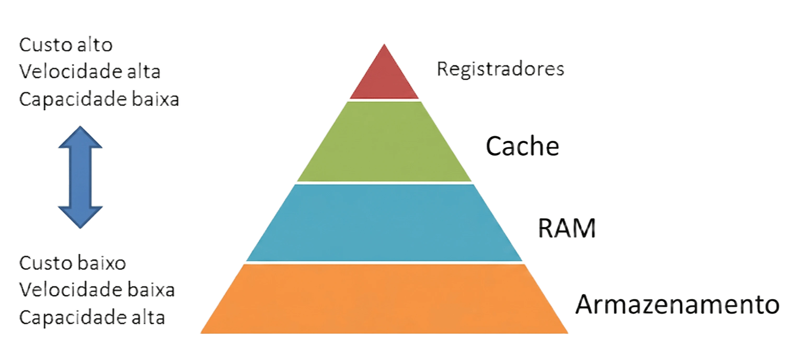
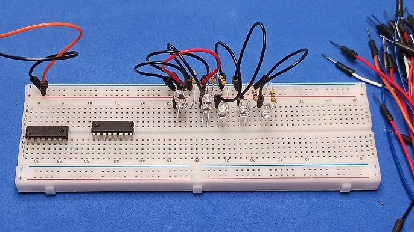

Níveis Físicos de Componentes
O armazenamento em sistemas digitais possui divisões físicas. A organização distribui os componentes por velocidade operacional. Processadores modernos realizam bilhões de cálculos por segundo. O hardware precisa fornecer dados rapidamente para a Unidade Lógica e Aritmética. A estruturação resolve a diferença de latência entre as partes. Existem camadas distintas no funcionamento computacional.
Os circuitos mais rápidos possuem custo financeiro elevado. Os componentes lentos custam menos e guardam mais bits. O projetista de hardware equilibra custo monetário e desempenho técnico. Esta estrutura obedece ao princípio da localidade temporal. A localidade espacial também determina o funcionamento eletrônico. Os dados acessados recentemente tendem a ser processados novamente. Os endereços próximos também serão lidos em breve.

Função dos Registradores e da Cache
Os registradores ficam dentro do processador principal. Eles guardam os bits durante as operações matemáticas. Sua capacidade máxima atinge poucos bytes. A velocidade de resposta é instantânea. Logo abaixo, a memória cache fica próxima aos núcleos de processamento. Ela serve como intermediária rápida para a placa principal. Os projetistas dividem a cache em três níveis físicos de integração.
O nível um possui tamanho menor e velocidade máxima. O nível três possui tamanho maior e atende todos os núcleos disponíveis. A RAM armazena os programas abertos em plena execução. Os circuitos dinâmicos perdem as informações sem energia elétrica contínua. Os discos rígidos guardam os arquivos permanentemente através de magnetismo. As unidades de estado sólido substituem os discos antigos oferecendo grande capacidade.
Sistemas digitais utilizam circuitos lógicos para funcionar corretamente. O mapa de Karnaugh simplifica essas expressões booleanas complexas. A simplificação reduz a quantidade de portas lógicas físicas aplicadas. Menos portas lógicas resultam em componentes eletrônicos eficientes. O consumo de energia elétrica diminui consideravelmente com isso. O desempenho térmico do chip melhora com essa otimização direta.

Ir para o início
Galeria dos Componentes


Retornar
Envie suas Dúvidas

Subir página
Mural do Laboratório




Início da página